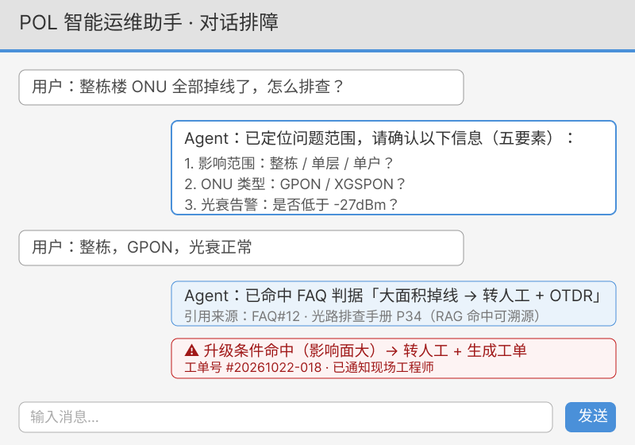
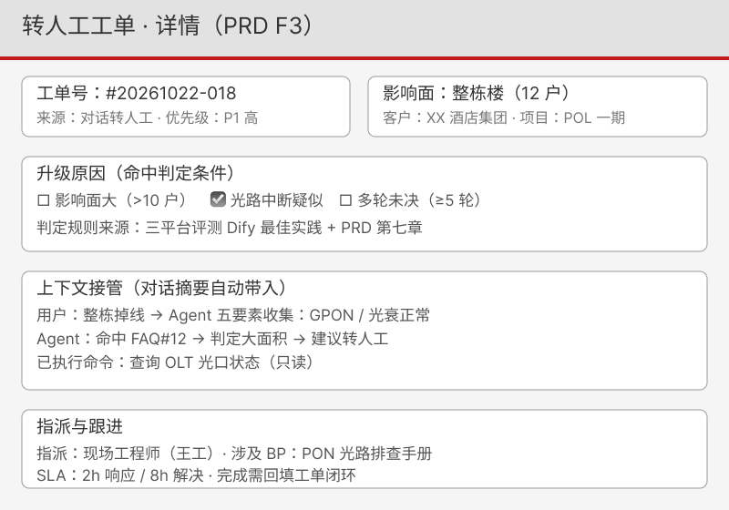
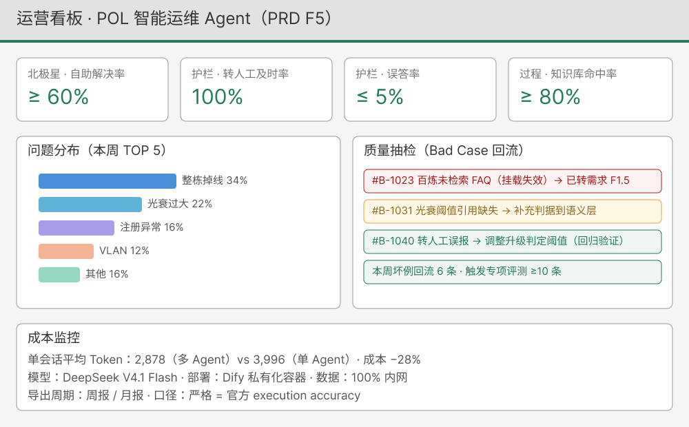

把客户愿意买的定义成研发能做的——16 章 + 2 附录 + 15 张规范表格，可直接进入研发评审。
| 模块 | 优先级 | 核心内容 |
|---|---|---|
| F1 知识库管理 | Must | 导入/切片/向量化/版本/权限/命中标记 |
| F2 对话排障 | Must | 五要素收集 · 分步排查 · 引用溯源 |
| F3 转人工与工单 | Must | 升级判定 · 工单生成 · 人工接管 |
| F4 工具与集成 | Should | OTDR 建议 · 网管/工单系统对接 |
| F5 运营分析 | Should | 命中率 · 问题分布 · 质量抽检 |
| 层级 | 指标 | 目标 |
|---|---|---|
| 北极星 | 常见故障自助解决率 | ≥ 60% |
| 护栏 | 转人工及时率 | 100% |
| 护栏 | 误答率 | ≤ 5% |
| 过程 | 知识库命中率 | ≥ 80% |
| 验收 | 10 题测试平均分 | ≥ 4.5（基线 Dify 4.95） |
流程的核心不是问答，是闭环：能安全解决的自动解决（满意度确认），不能安全解决的一律转人工（工单 + 上下文接管）。 判定规则直接来自三平台选型评测：吸收 Dify 的最佳实践，并规避百炼知识库挂载失效的坑。
评审用低保真线框，覆盖 PRD 三大核心场景：F2 对话排障（五要素追问 · RAG 溯源 · 升级触发）、F3 转人工工单（上下文接管 · SLA 指派）、F5 运营看板（北极星/护栏指标 · Bad Case 回流 · 成本监控）。线框图使用 Figma 绘制，可直接进入交互评审与高保真迭代。


